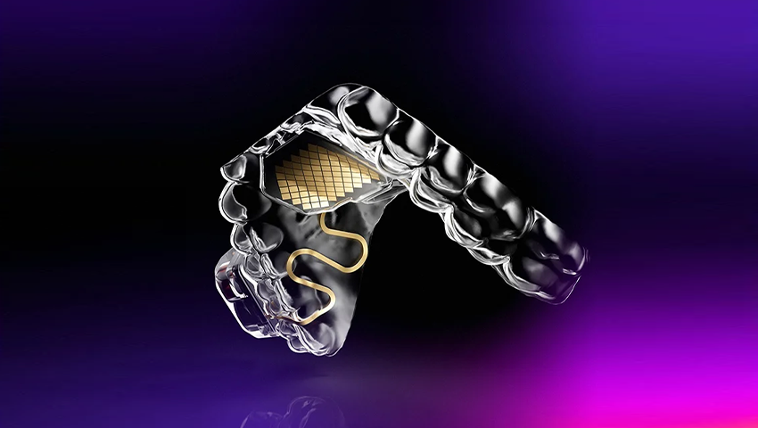
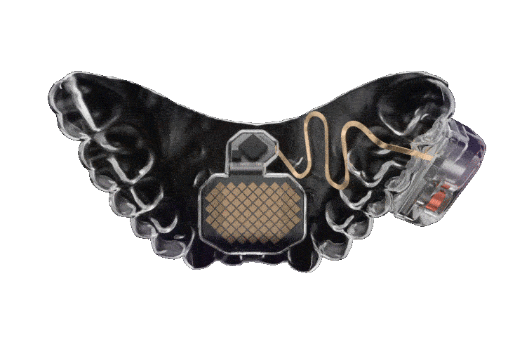

¿Qué es el MouthPad?
El MouthPad, desarrollado por la empresa Augmental, es un dispositivo innovador que permite a personas con movilidad limitada controlar ordenadores, teléfonos u otros dispositivos usando movimientos de la lengua. Este dispositivo, que se coloca en el paladar, detecta los gestos de la lengua y los convierte en comandos digitales, como clics, navegación o desplazamiento en pantalla. Conectado de manera inalámbrica mediante Bluetooth, el MouthPad facilita una interacción digital accesible y manos libres, proporcionando una solución intuitiva y práctica en entornos donde el uso de las manos es limitado o incómodo.
El MouthPad es una respuesta que transforma la accesibilidad digital al transformar movimientos concretos del idioma en instrucciones para desplazarse o interactuar con dispositivos de forma precisa e intuitiva. Además de incrementar la autonomía de individuos con restricciones motoras, el aparato ofrece oportunidades en contextos donde el manejo de las manos resulta difícil. Este progreso fortalece la noción de que el manejo de aparatos puede ser más inclusivo, proporcionando a sus usuarios una integración fluida y natural con la tecnología.
Beneficios del MouthPad
- Accesibilidad: Diseñado para personas con dificultades motoras, el MouthPad facilita el acceso a dispositivos digitales sin necesidad de manos.
- Control manos libres: Permite una interacción sin utilizar las manos, siendo útil en diferentes entornos.
- Interacción precisa: Utiliza sensores para detectar los movimientos específicos de la lengua, permitiendo una respuesta rápida y precisa en pantalla.
- Versatilidad: Compatible con dispositivos habilitados para Bluetooth, ampliando su rango de uso.
Evolución del MouthPad
El MouthPad representa un avance frente a métodos tradicionales como el teclado y el ratón, ofreciendo una alternativa más precisa y cómoda que también supera los dispositivos de control por voz o de seguimiento ocular.
A través de sensores avanzados, el dispositivo capta los movimientos de la lengua y los convierte en comandos digitales. Esto elimina barreras físicas, permitiendo que personas con movilidad reducida tengan un control directo y sin esfuerzo sobre dispositivos. La evolución que aporta el MouthPad no solo amplía la accesibilidad, sino que redefine la interacción persona-dispositivo, haciéndola más intuitiva y adaptable a diversas necesidades.
Más información
Para obtener más detalles sobre el MouthPad y su funcionamiento, visita: MouthPad.